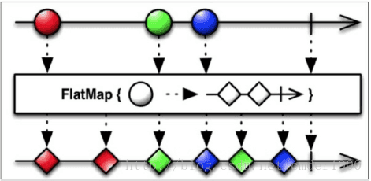
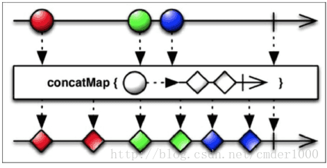

响应式编程简介
- 响应式编程是一种基于异步数据流概念的编程模式。数据流就像一条河：它可以被观测，被过滤，被操作，或者为新的消费者与另外一条流合并为一条新的流。
- 响应式编程的一个关键概念是事件。事件可以被等待，可以触发过程，也可以触发其它事件。事件是唯一的以合适的方式将我们的现实世界映射到我们的软件中：如果屋里太热了我们就打开一扇窗户。同样的，当我们更改电子表（变化的传播）中的一些数值时，我们需要更新整个表格或者我们的机器人碰到墙时会转弯（响应事件）。
- 今天，响应式编程最通用的一个场景是UI：我们的移动App必须做出对网络调用、用户触摸输入和系统弹框的响应。在这个世界上，软件之所以是事件驱动并响应的是因为现实生活也是如此。
响应式编程的具体实现-RxJava
基本概念
RxJava的四种角色
- Observable
- Observer
- Subscriber
- Subject
- Observable和Subject是两个“生产”实体，Observer和Subscriber是两个“消费”实体。
热Observable和冷Observable
从发射物的角度来看，有两种不同的Observable:热的和冷的。一个”热”的Observable典型的只要一创建完就开始发射数据，因此所有后续订阅它的观察者可能从序列中间的某个位置开始接受数据（有一些数据错过了）。一个”冷”的Observable会一直等待，直到有观察者订阅它才开始发射数据，因此这个观察者可以确保会收到整个数据序列。
Observable创建符
- Observable.create()
Observable.create(new Observable.OnSubscribe<Object>(){
@Override
public void call(Subscriber<? super Object> subscriber{
}
});
- Observable.from()
from() 创建符可以从一个列表/数组来创建Observable,并一个接一个的从列表/数组中发射出来每一个对象，或者也可以从Java Future 类来创建Observable，并发射Future对象的 .get() 方法返回的结果值。传入 Future 作为参数时，我们可以指定一个超时的值。Observable将等待来自 Future 的结果；如果在超时之前仍然没有结果返回，Observable将会触发 onError() 方法通知观察者有错误发生了。
List<Integer> items = new ArrayList<Integer>();
items.add(1);
items.add(10);
items.add(100);
items.add(200);
Observable<Integer> observableString = Observable.from(items);
Subscription subscriptionPrint = observableString.subscribe(new Observer<Integer>() {
@Override
public void onCompleted() {
System.out.println("Observable completed");
}
@Override
public void onError(Throwable e) {
System.out.println("Oh,no! Something wrong happened！");
}
@Override
public void onNext(Integer item) {
System.out.println("Item is " + item);
}
});
- Observable.just()
just() 方法可以传入一到九个参数，它们会按照传入的参数的顺序来发射它们。 just() 方法也可以接受列表或数组，就像 from() 方法，但是它不会迭代列表发射每个值,它将会发射整个列表。通常，当我们想发射一组已经定义好的值时会用到它。但是如果我们的函数不是时变性的，我们可以用just来创建一个更有组织性和可测性的代码库。
Observable<String> observableString = Observable.just(helloWorld
());
Subscription subscriptionPrint = observableString.subscribe(new
Observer<String>() {
@Override
public void onCompleted() {
System.out.println("Observable completed");
}
@Override
public void onError(Throwable e) {
System.out.println("Oh,no! Something wrong happened!");
}
@Override
public void onNext(String message) {
System.out.println(message);
}
});
helloWorld() 方法比较简单，像这样：
private String helloWorld(){
return "Hello World";
}
Subject
Subject 既可以是 Observable，也可以是 Observer。
RxJava 提供四种不同的 Subject :
- PublishSubject
- BehaviorSubject
BehaviorSubject会首先向他的订阅者发送截至订阅前最新的一个数据对象（或初始值）,然后正常发送订阅后的数据流。
BehaviorSubject<Integer> behaviorSubject = BehaviorSubject.create(1);
在这个短例子中，我们创建了一个能发射整形(Integer)的BehaviorSubject。由于每当Observes订阅它时就会发射最新的数据，所以它需要一个初始值。
- ReplaySubject
ReplaySubject 会缓存它所订阅的所有数据,向任意一个订阅它的观察者重发:
ReplaySubject<Integer> replaySubject = ReplaySubject.create();
- AsyncSubject
当Observable完成时AsyncSubject只会发布最后一个数据给已经订阅的每一个观察者。
AsyncSubject<Integer> asyncSubject = AsyncSubject.create();
直接创建 Observable
在我们的第一个列子里，我们将检索安装的应用列表并填充RecycleView的item来展示它们。我们也设想一个下拉刷新的功能和一个进度条来告知用户当前任务正在执行。
首先，我们创建Observable。我们需要一个函数来检索安装的应用程序列表并把它提供给我们的观察者。我们一个接一个的发射这些应用程序数据，将它们分组到一个单独的列表中，以此来展示响应式方法的灵活性。
private Observable<AppInfo> getApps(){
return Observable.create(subscriber -> {
List<AppInfoRich> apps = new ArrayList<AppInfoRich>();
final Intent mainIntent = new Intent(Intent.ACTION_MAIN, null);
mainIntent.addCategory(Intent.CATEGORY_LAUNCHER);
List<ResolveInfo> infos = getActivity().queryIntentActivities(mainIntent, 0);
for(ResolveInfo info : infos){
apps.add(new AppInfoRich(getActivity(),info));
}
for (AppInfoRich appInfo:apps) {
Bitmap icon = Utils.drawableToBitmap(appInfo.getIcon());
String name = appInfo.getName();
String iconPath = mFilesDir + "/" + name;
Utils.storeBitmap(App.instance, icon,name);
if (subscriber.isUnsubscribed()){
return;
}
subscriber.onNext(new AppInfo(name, iconPath, appInfo.getLastUpdateTime()));
}
if (!subscriber.isUnsubscribed()){
subscriber.onCompleted();
}
});
}
AppInfo为App信息的实体类，包括上次更新时间、图标、名字三个属性，此处省略。
需要重点注意的是在发射新的数据或者完成序列之前要检测观察者的订阅情况。这样的话代码会更高效，因为如果没有观察者等待时我们就不生成没有必要的数据项。
接下来，我们来定义下拉刷新的方法：
private void refreshTheList() {
getApps().toSortedList()
.subscribe(new Observer<List<AppInfo>>() {
@Override
public void onCompleted() {
Toast.makeText(getActivity(), "Here is the list!", Toast.LENGTH_LONG).show();
}
@Override
public void onError(Throwable e) {
Toast.makeText(getActivity(), "Something went wrong!", Toast.LENGTH_SHORT).show();
mSwipeRefreshLayout.setRefreshing(false);
}
@Override
public void onNext(List<AppInfo> appInfos) {
mRecyclerView.setVisibility(View.VISIBLE);
mAdapter.addApplications(appInfos);
mSwipeRefreshLayout.setRefreshing(false);
}
});
}
从列表创建 Observable
在这个例子中，我们将引入 from() 函数。使用这个特殊的“创建”函数，我们可以从一个列表中创建一个Observable。Observable将发射出列表中的每一个元素，我们可以通过订阅它们来对这些发出的元素做出响应。
private void loadList(List<AppInfo> apps) {
mRecyclerView.setVisibility(View.VISIBLE);
Observable.from(apps).subscribe(new Observer<AppInfo>() {
@Override
public void onCompleted() {
mSwipeRefreshLayout.setRefreshing(false);
Toast.makeText(getActivity(), "Here is the list!", Toast.LENGTH_LONG).show();
}
@Override
public void onError(Throwable e) {
Toast.makeText(getActivity(), "Something went wrong!", Toast.LENGTH_SHORT).show();
mSwipeRefreshLayout.setRefreshing(false);
}
@Override
public void onNext(AppInfo appInfo) {
mAddedApps.add(appInfo);
mAdapter.addApplication(mAddedApps.size() - 1, appInfo);
}
});
}
和第一个例子一个主要的不同是我们在 onCompleted() 函数中停掉进度条是因为我们一个一个的发射元素；
第一个例子中的Observable发射的是整个list,因此在 onNext() 函数中停掉进度条的做法是安全的。
具有特殊功能的创建符
- just()
你可以将一个函数作为参数传给 just() 方法，你将会得到一个已存在代码的原始Observable版本。在一个新的响应式架构的基础上迁移已存在的代码，这个方法可能是一个有用的开始点。 - repeat()
假如你想对一个Observable重复发射三次数据 :
Observable.just(appOne,appTwo,appThree)
.repeat(3)
.subscribe();
我们在 just() 创建Observable后追加了 repeat(3) ，它将会创建9个元素的序列，每一个都单独发射。
- defer()
有这样一个场景，你想在这声明一个Observable但是你又想推迟这个Observable的创建直到观察者订阅时。看下面的 getInt() 函数：
private Observable<Integer> getInt(){
return Observable.create(subscriber -> {
if(subscriber.isUnsubscribed()){
return;
}
App.L.debug("GETINT");
subscriber.onNext(42);
subscriber.onCompleted();
});
}
这比较简单，并且它没有做太多事情，但是它正好为我们服务。现在，我们可以创建一个新的Observable并且应用 defer() :
Observable<Integer> deferred = Observable.defer(this::getInt);
这次， deferred 存在，但是 getInt() create() 方法还没有调用 : logcat日志也没有“GETINT”打印出来 :
deferred.subscribe(number -> {
App.L.debug(String.valueOf(number));
});
但是一旦我们订阅了， create() 方法就会被调用并且我们也可以在logcat日志中打印出两个值：GETINT 和 42。
-
range()
从一个指定的数字X开始发射N个数字。range() 函数用两个数字作为参数：第一个是起始点，第二个是我们想发射数字的个数。 -
interval()
interval() 函数在你需要创建一个轮询程序时非常好用。interval() 函数的两个参数：一个指定两次发射的时间间隔，另一个是用到的时间单位。 -
timer()
如果你需要一个一段时间之后才发射的Observable，你可以使用 timer()。
过滤Observables
过滤序列
RxJava让我们使用 filter() 方法来过滤我们观测序列中不想要的值。
我们从发出的每个元素中过滤掉开头字母不是C的 :
.filter(new Func1<AppInfo,Boolean>(){
@Override
public Boolean call(AppInfo appInfo){
return appInfo.getName().startsWith("C");
}
})
我们传一个新的 Func1 对象给 filter() 函数，即只有一个参数的函数。 Func1 有一个 AppInfo 对象来作为它的参数类型并且返回 Boolean 对象。只要条件符合 filter() 函数就会返回 true 。此时，值会发射出去并且所有的观察者都会接收到。
filter() 函数最常用的用法之一时过滤 null 对象：
.filter(new Func1<AppInfo,Boolean>(){
@Override
public Boolean call(AppInfo appInfo){
return appInfo != null;
}
})
它帮我们免去了在 onNext() 函数调用中再去检测 null 值，让我们把注意力集中在应用业务逻辑上。
获取我们需要的数据
当我们不需要整个序列时，而是只想取开头或结尾的几个元素，我们可以用 take() 或 takeLast() 。
- take()
take() 函数用整数N来作为一个参数，从原始的序列中发射前N个元素，然后完成：
Observable.from(apps)
.take(3)
.subscribe(...);
- takeLast()
如果我们想要最后N个元素，我们只需使用 takeLast() 函数：
Observable.from(apps)
.takeLast(3)
.subscribe(...);
有且仅有一次
- distinct()
就像 takeLast() 一样， distinct() 作用于一个完整的序列，然后得到重复的过滤项，它需要记录每一个发射的值。如果你在处理一大堆序列或者大的数据记得关注内存使用情况。
Observable<AppInfo> fullOfDuplicates = Observable.from(apps)
.take(3)
.repeat(3);
fullOfDuplicates.distinct()
.subscribe(...);
- ditinctUntilChanged()
如果在一个可观测序列发射一个不同于之前的一个新值时让我们得到通知这时候该怎么做？ditinctUntilChanged() 过滤函数能做到这一点。它能轻易的忽略掉所有的重复并且只发射出新的值。
First and last
first() 方法和 last() 方法很容易弄明白。它们从Observable中只发射第一个元素或者最后一个元素。这两个都可以传 Func1 作为参数。
与 first() 和 last() 相似的变量有： firstOrDefault() 和 lastOrDefault() 。这两个函数当可观测序列完成时不再发射任何值时用得上。在这种场景下，如果Observable不再发射任何值时我们可以指定发射一个默认的值。
Skip and SkipLast
skip() 和 skipLast() 函数与 take() 和 takeLast() 相对应。它们用整数N作参数，从本质上来说，它们不让Observable发射前N个或者后N个值。
ElementAt
如果我们只想要可观测序列发射的第五个元素该怎么办？ elementAt() 函数仅从一个序列中发射第n个元素然后就完成了。
如果我们想查找第五个元素但是可观测序列只有三个元素可供发射时该怎么办？我们可以使用 elementAtOrDefault() 。
Sampling
在Observable后面加一个 sample() ，我们将创建一个新的可观测序列，它将在一个指定的时间间隔里由Observable发射最近一次的数值：
Observable<Integer> sensor = [...]
sensor.sample(30,TimeUnit.SECONDS)
.subscribe(...);
如果我们想让它定时发射第一个元素而不是最近的一个元素，我们可以使用 throttleFirst() 。
Timeout
我们可以使用 timeout() 函数来监听源可观测序列,就是在我们设定的时间间隔内如果没有得到一个值则发射一个错误。我们可以认为 timeout() 为一个Observable的限时的副本。如果在指定的时间间隔内Observable不发射值的话，它监听的原始的Observable时就会触发 onError() 函数。
Subscription subscription = getCurrentTemperature()
.timeout(2,TimeUnit.SECONDS)
.subscribe(...);
Debounce
debounce() 函数过滤掉由Observable发射的速率过快的数据；如果在一个指定的时间间隔过去了仍旧没有发射一个，那么它将发射最后的那个。
下图展示了多久从Observable发射一次新的数据， debounce() 函数开启一个内部定时器，如果在这个时间间隔内没有新的据发射，则新的Observable发射出最后一个数据：

变换Observables
*map家族
RxJava提供了几个mapping函数： map() , flatMap() , concatMap() , flatMapIterable() 以及 switchMap() .所有这些函数都作用于一个可观测序列，然后变换它发射的值，最后用一种新的形式返回它们。
- Map
RxJava的 map 函数接收一个指定的 Func 对象然后将它应用到每一个由Observable发射的值上。
Observable.from(apps)
.map(new Func1<AppInfo,AppInfo>(){
@Override
public Appinfo call(AppInfo appInfo){
String currentName = appInfo.getName();
String lowerCaseName = currentName.toLowerCase();
appInfo.setName(lowerCaseName);
return appInfo;
}
})
.subscribe(...);
正如你看到的，像往常一样创建我们发射的Observable之后，我们追加一个 map 调用，我们创建一个简单的函数来更新 AppInfo对象并提供一个名字小写的新版本给观察者。
- FlatMap
在复杂的场景中，我们有一个这样的Observable：它发射一个数据序列，这些数据本身也可以发射Observable。RxJava的 flatMap() 函数提供一种铺平序列的方式，然后合并这些Observables发射的数据，最后将合并后的结果作为最终的Observable。

当我们在处理可能有大量的Observables时，重要是记住任何一个Observables发生错误的情况， flatMap() 将会触发它自己的 onError() 函数并放弃整个链。重要的一点提示是关于合并部分：它允许交叉。正如上图所示，这意味着 flatMap() 不能够保证在最终生成的Observable中源Observables确切的发射顺序。
-
ConcatMap
RxJava的 concatMap() 函数解决了 flatMap() 的交叉问题，提供了一种能够把发射的值连续在一起的铺平函数，而不是合并它们，如下图所示：
 -
FlatMapIterable
作为*map家族的一员， flatMapInterable() 和 flatMap() 很像。仅有的本质不同是它将源数据两两结成对并生成Iterable，而不是原始数据项和生成的Observables。 -
SwitchMap
switchMap() 和 flatMap() 很像，除了一点：每当源Observable发射一个新的数据项（Observable）时，它将取消订阅并停止监视之前那个数据项产生的Observable，并开始监视当前发射的这一个。 -
Scan
RxJava的 scan() 函数可以看做是一个累积函数。 scan() 函数对原始Observable发射的每一项数据都应用一个函数，计算出函数的结果值，并将该值填充回可观测序列，等待和下一次发射的数据一起使用。
作为一个通用的例子，给出一个累加器：
Observable.just(1,2,3,4,5)
.scan((sum,item) -> sum + item)
.subscribe(new Subscriber<Integer>() {
@Override
public void onCompleted() {
Log.d("RXJAVA", "Sequence completed.");
}
@Override
public void onError(Throwable e) {
Log.e("RXJAVA", "Something went south!");
}
@Override
public void onNext(Integer item) {
Log.d("RXJAVA", "item is: " + item);
}
});
我们得到的结果是：
RXJAVA: item is: 1
RXJAVA: item is: 3
RXJAVA: item is: 6
RXJAVA: item is: 10
RXJAVA: item is: 15
RXJAVA: Sequence completed.
GroupBy
RxJava提供了一个有用的函数从列表中按照指定的规则： groupBy() 来分组元素。下图中的例子展示了 groupBy() 如何将发射的值根据他们的形状来进行分组。

这个函数将源Observable变换成一个发射Observables的新的Observable。它们中的每一个新的Observable都发射一组指定的数据。
为了创建一个分组了的已安装应用列表，我们在 loadList() 函数中引入了一个新的元素：
Observable<GroupedObservable<String,AppInfo>> groupedItems = Observable.from(apps)
.groupBy(new Func1<AppInfo,String>(){
@Override
public String call(AppInfo appInfo){
SimpleDateFormat formatter = new SimpleDateFormat("MM/yyyy");
return formatter.format(new Date(appInfo.getLastUpdateTime()));
}
});
现在我们创建了一个新的Observable， groupedItems ，它将会发射一个带有 GroupedObservable 的序列。 GroupedObservable 是一个特殊的Observable，它源自一个分组的key。在这个例子中，key就是 String ，代表的意思是 Month/Year 格式化的最近更新日期。
Buffer
RxJava中的 buffer() 函数将源Observable变换一个新的Observable，这个新的Observable每次发射一组列表值而不是一个一个发射。
buffer() 函数有几种变体。其中有一个是允许你指定一个 skip 值：此后每 skip 项数据，用count项数据填充缓冲区。另一个是buffer() 带一个 timespan 的参数，会创建一个每隔timespan时间段就会发射一个列表的Observable。
Window
RxJava的 window() 函数和 buffer() 很像，但是它发射的是Observable而不是列表。
正如 buffer() 一样, window() 也有一个 skip 变体。
Cast
cast() 函数是 map() 操作符的特殊版本。它将源Observable中的每一项数据都转换为新的类型，把它变成了不同的 Class 。
组合Observables
Merge
在”异步的世界“中经常会创建这样的场景，我们有多个来源但是又只想有一个结果：多输入，单输出。RxJava的 merge() 方法将帮助你把两个甚至更多的Observables合并到他们发射的数据项里。下图给出了把两个序列合并在一个最终发射的Observable。
正如你看到的那样，发射的数据被交叉合并到一个Observable里面。注意如果你同步的合并Observable，它们将连接在一起并且不会交叉。
Observable<AppInfo> mergedObserbable = Observable.merge(observableApps,observableReversedApps);
mergedObserbable.subscribe(...);
注意错误时的toast消息，你可以认为每个Observable抛出的错误都将会打断合并。如果你需要避免这种情况，RxJava提供了 mergeDelayError() ，它能从一个Observable中继续发射数据即便是其中有一个抛出了错误。当所有的Observables都完成时， mergeDelayError() 将会发射 onError()。
ZIP
在一种新的可能场景中处理多个数据来源时会带来：多从个Observables接收数据，处理它们，然后将它们合并成一个新的可观测序列来使用。RxJava有一个特殊的方法可以完成： zip() 合并两个或者多个Observables发射出的数据项，根据指定的函数Func* 变换它们，并发射一个新值。下图展示了 zip() 方法如何处理发射的“numbers”和“letters”然后将它们合并一个新的数据项：

Observable.zip(observableApp, tictoc, (AppInfo appInfo, Long time) -> updateTitle(appInfo, time))
.observeOn(AndroidSchedulers.mainThread())
.subscribe(...);
zip() 函数有三个参数：两个Observables和一个 Func2 。
Join
前面两个方法， zip() 和 merge() 方法作用在发射数据的范畴内，在决定如何操作值之前有些场景我们需要考虑时间的。RxJava的 join() 函数基于时间窗口将两个Observables发射的数据结合在一起。
为了正确的理解上一张图，我们解释下 join() 需要的参数：
- 第二个Observable和源Observable结合。
- Func1 参数：在指定的由时间窗口定义时间间隔内，源Observable发射的数据和从第二个Observable发射的数据相互配合返回的Observable。
- Func1 参数：在指定的由时间窗口定义时间间隔内，第二个Observable发射的数据和从源Observable发射的数据相互配合返回的Observable。
- Func2 参数：定义已发射的数据如何与新发射的数据项相结合。
combineLatest
RxJava的 combineLatest() 函数有点像 zip() 函数的特殊形式。正如我们已经学习的， zip() 作用于最近未打包的两个Observables。相反， combineLatest() 作用于最近发射的数据项：如果 Observable1 发射了A并且 Observable2 发射了B和C， combineLatest() 将会分组处理AB和AC，如下图所示：
And,Then和When
在将来还有一些 zip() 满足不了的场景。如复杂的架构，或者是仅仅为了个人爱好，你可以使用And/Then/When解决方案。它们在RxJava的joins包下，使用Pattern和Plan作为中介，将发射的数据集合并到一起。
Switch
给出一个发射多个Observables序列的源Observable， switch() 订阅到源Observable然后开始发射由第一个发射的Observable发射的一样的数据。当源Observable发射一个新的Observable时， switch() 立即取消订阅前一个发射数
据的Observable（因此打断了从它那里发射的数据流）然后订阅一个新的Observable，并开始发射它的数据。
StartWith
RxJava的 startWith() 是 concat() 的对应部分。正如 concat() 向发射数据的Observable追加数据那样，在Observable开始发射他们的数据之前，startWith() 通过传递一个参数来先发射一个数据序列。
Schedulers-解决Android主线程问题
Schedulers
调度器以一种最简单的方式将多线程用在你的Apps的中。它们时RxJava重要的一部分并能很好地与Observables协同工作。它们无需处理实现、同步、线程、平台限制、平台变化而可以提供一种灵活的方式来创建并发程序。
RxJava提供了5种调度器：
- .io()
- .computation()
- .immediate()
- .newThread()
- .trampoline()
Schedulers.io()
这个调度器时用于I/O操作。它基于根据需要，增长或缩减来自适应的线程池。我们将使用它来修复我们之前看到的 StrictMode 违规做法。由于它专用于I/O操作，所以并不是RxJava的默认方法；正确的使用它是由开发者决定的。
重点需要注意的是线程池是无限制的，大量的I/O调度操作将创建许多个线程并占用内存。一如既往的是，我们需要在性能和简捷两者之间找到一个有效的平衡点。
Schedulers.computation()
这个是计算工作默认的调度器，它与I/O操作无关。它也是许多RxJava方法的默认调度器： buffer() , debounce() , delay() , interval() , sample() , skip()。
Schedulers.immediate()
这个调度器允许你立即在当前线程执行你指定的工作。它是 timeout() , timeInterval() ,以及 timestamp() 方法默认的调度器。
Schedulers.newThread()
这个调度器正如它所看起来的那样：它为指定任务启动一个新的线程。
Schedulers.trampoline()
当我们想在当前线程执行一个任务时，并不是立即，我们可以用 .trampoline() 将它入队。这个调度器将会处理它的队列并且按序运行队列中每一个任务。它是 repeat() 和 retry() 方法默认的调度器。
非阻塞I/O操作
使用 Schedulers.io() 创建非阻塞的版本：
public static void storeBitmap(Context context, Bitmap bitmap, String filename) {
Schedulers.io().createWorker().schedule(() -> {
blockingStoreBitmap(context, bitmap, filename);
});
}
SubscribeOn and ObserveOn
我们学到了如何在一个调度器上运行一个任务。但是我们如何利用它来和Observables一起工作呢？RxJava提供了 subscribeOn() 方法来用于每个Observable对象。 subscribeOn() 方法用 Scheduler 来作为参数并在这个Scheduler上执行Observable调用。
首先，我们需要一个新的 getApps() 方法来检索已安装的应用列表：
private Observable<AppInfo> getApps() {
return Observable.create(subscriber -> {
List<AppInfo> apps = new ArrayList<>();
SharedPreferences sharedPref = getActivity().getPreferences(Context.MODE_PRIVATE);
Type appInfoType = new TypeToken<List<AppInfo>>(){}.getType();
String serializedApps = sharedPref.getString("APPS", "");
if (!"".equals(serializedApps)) {
apps = new Gson().fromJson(serializedApps,appInfoType);
}
for (AppInfo app : apps) {
subscriber.onNext(app);
}
subscriber.onCompleted();
});
}
然后，我们所需要做的是指定 getApps() 需要在调度器上执行：
getApps().subscribeOn(Schedulers.io())
.subscribe(new Observer<AppInfo>() { [...]
最后，我们只需在 loadList() 函数添加几行代码，那么每一项就都准备好了：
getApps()
.onBackpressureBuffer()
.subscribeOn(Schedulers.io())
.observeOn(AndroidSchedulers.mainThread())
.subscribe(new Observer<AppInfo>() { [...]
observeOn() 方法将会在指定的调度器上返回结果：如例子中的UI线程。 onBackpressureBuffer() 方法将告诉Observable发射的数据如果比观察者消费的数据要更快的话，它必须把它们存储在缓存中并提供一个合适的时间给它们。
处理耗时的任务
一个与I/O无关的耗时的任务：
getObservableApps(apps)
.onBackpressureBuffer()
.subscribeOn(Schedulers.computation())
.observeOn(AndroidSchedulers.mainThread())
.subscribe(new Observer<AppInfo>() { [...]
总结
RxJava提供了一种以面向时序的方式考虑数据的机会：所有事情都是持续变化的，数据在更新，事件在触发，然后你就可以创建事件响应式的、灵活的、运行流畅的App。